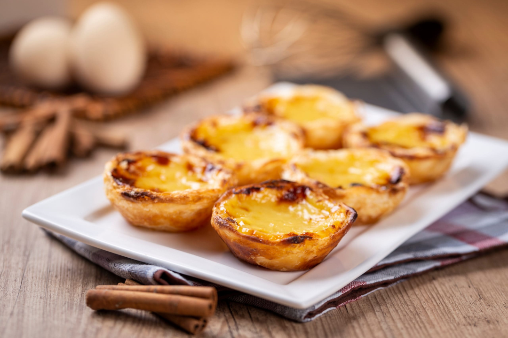

Los pasteles de Belém, también conocidos como "pasteles de nata", son uno de los pasteles más emblemáticos y
deliciosos de la pastelería portuguesa. Su historia se remonta al siglo XIX, en el antiguo convento de los
Jerónimos, en el barrio de Belém, Lisboa, Portugal.
En 1820, tras la revolución liberal en Portugal, muchos conventos y monasterios fueron cerrados y sus miembros
expulsados. El Convento de los Jerónimos, que solía producir estos pasteles, también se vio afectado. Para
sobrevivir, algunos monjes y monjas comenzaron a vender pasteles y otros productos de repostería en una tienda
cercana.
En Lisboa encontraras confiterías que elaboran los Pasteles de Belem por doquier. Sin embargo, una visita a la
capital lusa no sería completa sin acercarnos al lugar original, en el barrio de Belem. Nos referimos a la
confitería Pastéis de Belem, en la Ruta de Belem número 84, a 300 metros del Monasterio de Belem y a poco más de
1 kilómetro de la Torre de Belem, otro de los imprescindibles de Lisboa.
En la Pastelería de Pastéis de Belem, que se ha convertido en motivo de peregrinaje, podes comprar de uno
en uno o en cajitas de 6 o 10 unidades, listos para llevároslos a casa. Pero los suyo es aprovechar para
sentarse y de esta manera, tomar un pequeño descanso entre las varias visitas de interés del barrio de Belem.
Además, la Pastelería es un lugar con mucho encanto, dispuesto al modo añejo, con los típicos azulejos
portugueses y sus vitrinas típicas, de manera que merece la pena que disfrutéis del momento.
|
Escuchamos el Podcast
acerca de la receta de los Pasteis de Belem por Manuel Fernandez Zanca |
|
Mucha gente ha oído hablar de los famosos Pastéis de Nata. La receta de los pastéis originales, los "Pastéis de Belém", se ha mantenido en secreto durante más de 185 años. Creada en el distrito de Belém de la capital de Portugal, Lisboa, sus actuales guardianes son los tres pasteleros de la panadería Pastéis de Belém. Allí se hornean alrededor de 20.000 al día. Gente de todo Portugal e incluso del mundo viene aquí para disfrutar de estos deliciosos y verdaderamente originales manjares. |